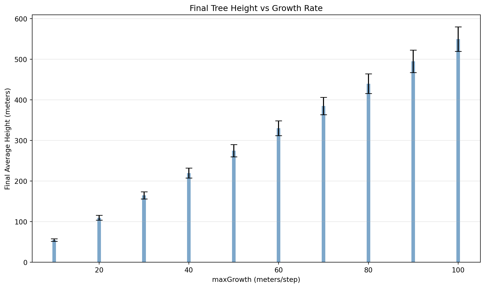

This demo walks through a complete parameter sweep workflow. We vary the maxGrowth parameter from 10 to 100 meters/step across 10 experiments, each with 3 replicates, then load, query, and visualize the results.
Prerequisites
Ensure the Josh JAR is available at jar/joshsim-fat.jar and joshpy is installed:
pip install -e'.[all]'
Step 1: Setup - Define Parameter Sweep
The first step is to define our experiment configuration. joshpy uses three key abstractions:
JobConfig: The top-level configuration specifying source files, templates, and sweep parameters
SweepConfig: Defines which parameters to sweep and their values
SweepParameter: A single parameter with a name and list of values
The JobExpander will later compute the cartesian product of all parameters, generating one job per combination.
from pathlib import Pathfrom joshpy.jobs import JobConfig, SweepConfig, SweepParameter# Paths to source filesSOURCE_PATH = Path("../examples/hello_cli_configurable.josh")TEMPLATE_PATH = Path("../examples/templates/sweep_config.jshc.j2")# Parameter sweep: maxGrowth from 10 to 100 in steps of 10MAX_GROWTH_VALUES =list(range(10, 101, 10))config = JobConfig( template_path=TEMPLATE_PATH, source_path=SOURCE_PATH, simulation="Main", replicates=3, sweep=SweepConfig( parameters=[SweepParameter(name="maxGrowth", values=MAX_GROWTH_VALUES)] ),)print(f"Parameter values: {MAX_GROWTH_VALUES}")print(f"Replicates per job: {config.replicates}")print(f"Total runs: {len(MAX_GROWTH_VALUES)} x {config.replicates} = {len(MAX_GROWTH_VALUES) * config.replicates}")
Parameter values: [10, 20, 30, 40, 50, 60, 70, 80, 90, 100]
Replicates per job: 3
Total runs: 10 x 3 = 30
Let’s examine the source files. The .josh file defines the simulation, and the .jshc.j2 template provides parameterized configuration:
============================================================
Source file (.josh):
============================================================
# A configurable version of hello_cli.josh
# Uses config variables from sweep_config.jshc for parameterization
start simulation Main
grid.size = 1000 m
grid.low = 33.7 degrees latitude, -115.4 degrees longitude
grid.high = 34.0 degrees latitude, -116.4 degrees longitude
grid.patch = "Default"
steps.low = 0 count
steps.high = 10 count
exportFiles.patch = "file:///tmp/hello_josh_{maxGrowth}_{replicate}.csv"
end simulation
start patch Default
ForeverTree.init = create 10 count of ForeverTree
export.averageAge.step = mean(ForeverTree.age)
export.averageHeight.step = mean(ForeverTree.height)
end patch
start organism ForeverTree
maxGrowth.init = config sweep_config.maxGrowth
age.init = 0 year
age.step = prior.age + 1 year
height.init = 0 meters
# maxGrowth is configurable via sweep_config.jshc
height.step = prior.height + sample uniform from 0 meters to maxGrowth
end organism
start unit year
alias years
alias yr
alias yrs
end unit
Josh exports simulation data to CSV files. The CellDataLoader imports these into a DuckDB cell_data table, linking each row to its originating run via run_id and config_hash. This enables queries that join parameters with results.
from joshpy.cell_data import CellDataLoaderloader = CellDataLoader(registry)print("Loading CSV exports into registry...")total_loaded =0files_found =0for result in results:ifnot result.success:continue job = result.job mg = job.parameters["maxGrowth"]# Get run_id from registry (created by RegistryCallback) runs = registry.get_runs_for_config(job.config_hash)ifnot runs:print(f" Skipping maxGrowth={mg} (no run_id)")continue run_id = runs[0].run_id# Load each replicate's CSVfor rep inrange(job.replicates): csv_path = Path(f"/tmp/hello_josh_{mg}_{rep}.csv")if csv_path.exists(): rows = loader.load_csv(csv_path, run_id=run_id, config_hash=job.config_hash) total_loaded += rows files_found +=1print(f"\nLoaded {total_loaded:,} rows from {files_found} files")
Loading CSV exports into registry...
Loaded 1,043,460 rows from 30 files
Step 5: Query Results
The DiagnosticQueries class provides ready-made queries for common analysis patterns. The get_parameter_comparison() method aggregates a variable across parameter values and timesteps, computing mean and standard deviation across replicates.
import numpy as npfrom joshpy.cell_data import DiagnosticQueriesqueries = DiagnosticQueries(registry)# Compare averageHeight across all maxGrowth valuesdf = queries.get_parameter_comparison( variable="averageHeight", param_name="maxGrowth",)print(f"Retrieved {len(df)} rows\n")ifnot df.empty:print("Sample data (first 15 rows):")print(df.head(15).to_string(index=False))
With data in a pandas DataFrame, visualization is straightforward using matplotlib. We’ll create two plots:
Time series: Tree height over simulation steps, colored by maxGrowth
Bar chart: Final height vs growth rate parameter with error bars
import matplotlib.pyplot as pltifnot df.empty: fig, ax = plt.subplots(figsize=(10, 6))for mg, group in df.groupby("param_value"): ax.plot(group["step"], group["mean_value"], marker="o", label=f"{mg}m") ax.set_xlabel("Simulation Step") ax.set_ylabel("Average Tree Height (meters)") ax.set_title("Tree Growth Over Time by maxGrowth Parameter") ax.legend(title="maxGrowth", bbox_to_anchor=(1.05, 1), loc="upper left") ax.grid(True, alpha=0.3) plt.tight_layout() plt.show()else:print("No data to plot.")
Figure 1: Tree height trajectories for different maxGrowth parameter values. Higher growth rates produce taller trees, as expected.
ifnot df.empty:# Get final timestep data final_df = df[df["step"] == df["step"].max()].copy() fig, ax = plt.subplots(figsize=(10, 6)) ax.bar( final_df["param_value"].astype(float), final_df["mean_value"], yerr=final_df["std_value"], capsize=5, alpha=0.7, color="steelblue", ) ax.set_xlabel("maxGrowth (meters/step)") ax.set_ylabel("Final Average Height (meters)") ax.set_title("Final Tree Height vs Growth Rate") ax.grid(True, alpha=0.3, axis="y") plt.tight_layout() plt.show()# Calculate correlation r = np.corrcoef( final_df["param_value"].astype(float), final_df["mean_value"] )[0, 1]print(f"\nCorrelation between maxGrowth and final height: r = {r:.4f}")else:print("No data to plot.")

Figure 2: Final tree height vs growth rate parameter. Error bars show standard deviation across replicates.
Correlation between maxGrowth and final height: r = 1.0000
Summary
This demo illustrated the core joshpy workflow:
Define a parameter sweep using JobConfig and SweepConfig
Track experiments with RunRegistry sessions and configs
Execute simulations via JobRunner with automatic tracking
Load CSV outputs into queryable DuckDB tables
Query results across parameters using DiagnosticQueries
Visualize parameter sensitivity with standard Python tools
The registry-backed approach ensures reproducibility and enables complex queries joining parameters with results across multiple experiments.